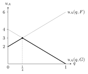

6 Security strategies and zero-sum games
Nash equilibrium asks players to hold correct beliefs about each other. A more pessimistic, optimisation-flavoured approach asks instead: what can a player guarantee regardless of what the others do? This chapter defines security (maximin) strategies and the minimax payoff, relates them to Nash equilibrium, and shows that for zero-sum games the two viewpoints coincide — von Neumann’s minimax theorem — so that equilibria can be computed by linear programming.
6.1 Maximin and minimax
Consider player \(i\) against “the rest”, \(-i\).
Let \(f_i(s_i) = \min_{s_{-i} \in S_{-i}} u_i(s_i, s_{-i})\) be the worst payoff of \(s_i\). A strategy \(s_i^* \in \arg\max_{s_i} f_i(s_i)\) is a security strategy (maximinimizer) and \[w_i = \max_{s_i \in S_i}\ \min_{s_{-i} \in S_{-i}}\ u_i(s_i, s_{-i})\] is the maximin or security payoff of \(i\).
A security strategy is the conservative choice: the best payoff in case the opponents make the worst possible move for \(i\).
Let \(F_i(s_{-i}) = \max_{s_i} u_i(s_i, s_{-i})\) be \(i\)’s best payoff against \(s_{-i}\). The minimax of \(i\) is \[z_i = \min_{s_{-i} \in S_{-i}}\ \max_{s_i \in S_i}\ u_i(s_i, s_{-i}).\]
If \(i\) could move after seeing \(-i\)’s choice, the minimax is the payoff \(i\) would be guaranteed: the opponents’ most punishing choice, against which \(i\) best-responds.
Only player A’s payoffs matter here:
| L | C | R | \(f_A\) (row min) | |
|---|---|---|---|---|
| T | 5 | 3 | 4 | 3 |
| D | 2 | 6 | 1 | 1 |
| \(F_A\) (column max) | 5 | 6 | 4 |
A’s maximin is \(3\) (security strategy \(T\)); A’s minimax is \(4\) (B’s most punishing column is \(R\)).
For every player \(i\): (1) \(\text{maximin}_i \leq \text{minimax}_i\); (2) if \(s\) is a Nash equilibrium, then \(\text{minimax}_i \leq u_i(s)\).
- holds because moving second can only help. (2) holds because at a NE, \(u_i(s) = \max_{s_i} u_i(s_i, s_{-i}) = F_i(s_{-i}) \geq \min F_i\). Equality of maximin and minimax does not, however, guarantee a pure NE in general games.
6.2 Zero-sum games
A two-player game is zero-sum if \(u_1(s) = -u_2(s)\) for every profile \(s\). More generally a game is strictly competitive (adversarial) if \(u_1\) increases exactly when \(u_2\) decreases.
Odds & Evens, rock–paper–scissors and chess are zero-sum. Since utilities matter up to affine transformations, a constant-sum game (chess scored \(1\) for a win, \(\tfrac12\) each for a draw) is equivalent to a zero-sum one; football league points (\(3\) for a win, \(1\) each for a draw) are not. A zero-sum game is described by a single matrix \(u = u_1\).
Let \(G\) be a finite two-player zero-sum game.
- \(G\) has a pure Nash equilibrium iff \(\text{maximin}_i = \text{minimax}_i\) for each player \(i\).
- All Nash equilibria give the same payoff, equal to \(\text{maximin}_i\).
- Nash equilibria are exactly the pairs of security strategies.
| L | C | R | |
|---|---|---|---|
| T | −9 | 8 | −5 |
| M | −2 | 6 | 2 |
| D | −1 | 3 | 4 |
Row minima are \(-9, -2, -1\): A’s maximin is \(-1\) (play \(D\)). Column maxima are \(-1, 8, 4\): A’s minimax is \(-1\) (B plays \(L\)). They coincide, and \((D, L)\) is a NE with \(u_A = -1\).
In a zero-sum game it is enough to check one player, since \(\text{maximin}_1 = -\text{minimax}_2\) and \(\text{minimax}_1 = -\text{maximin}_2\). The common value is the value of the game, and a joint security strategy is a saddle point of the payoff matrix — the minimum of its row and the maximum of its column. Some games with infinite strategy sets have no value.
6.3 Mixed security strategies
With \(f_i(m_i) = \min_{m_{-i}} u_i(m_i, m_{-i})\), a maximiser of \(f_i\) over \(\Delta S_i\) is a mixed security strategy and its value the mixed maximin. Symmetrically, \(\min_{m_{-i}} \max_{m_i} u_i(m_i, m_{-i})\) is the mixed minimax.
By linearity, \(f_i(m_i)\) can be computed against the opponents’ pure strategies only, and the inner maximum in the minimax against \(i\)’s pure strategies only. Moreover, the payoff is continuous and bilinear, so mixed maximin and mixed minimax always exist and are equal; overall \[\text{maximin}_i \;\leq\; \text{maximin}^m_i \;=\; \text{minimax}^m_i \;\leq\; \text{minimax}_i ,\] and at any mixed NE \(m\), \(\text{minimax}^m_i \leq u_i(m)\).
In the Art–Bea game of Chapter 5 (Art: \(U\) gives \(6\) or \(0\), \(D\) gives \(2\) or \(4\)), if Art plays \(U\) with probability \(q\), \[f_A(q) = \min\{6q + 2(1-q),\ 4(1-q)\} = \min\{2 + 4q,\ 4 - 4q\},\] maximised where the two lines cross, at \(q = \tfrac14\), with mixed maximin \(3\).

Figure: Art’s payoff against Bea’s two pure strategies; the bold lower envelope is \(f_A(q)\), maximised at \(q = \tfrac14\).
One checks that Art’s mixed minimax is also \(3\), which is his payoff at the NE \((\tfrac58, \tfrac12)\); for Bea, mixed maximin \(=\) mixed minimax \(= 2.5 = u_B(\text{NE})\).
In a non-zero-sum game a security strategy need not be an equilibrium strategy. In the Battle of the Sexes, pure maximin is \(0\) and pure minimax is \(1\) for both players; the mixed maximin is \(\tfrac23\), achieved by Ann playing \(R\) with probability \(\tfrac13\) — not the \(\tfrac23\) of the mixed NE. The three equilibria give Ann \(2\), \(1\) and \(\tfrac23\).
\(\text{maximin} = -4 < \text{maximin}^m = \text{minimax}^m = 0 < \text{minimax} = 4\). The value \(0\) is the payoff of the mixed equilibrium.
6.4 The minimax theorem
Let \(G\) be a finite two-player zero-sum game. Then:
- for each player, \(\text{maximin}^m_i = \text{minimax}^m_i\), and \(G\) has a Nash equilibrium in mixed strategies;
- the mixed Nash equilibria are exactly the pairs of mixed security strategies, and all yield player \(i\) the payoff \(\text{maximin}^m_i\).
All equilibria of a zero-sum game are therefore equivalent and interchangeable: they share the same payoff, and combining one player’s equilibrium strategy with the other’s from a different equilibrium is again an equilibrium. The common \(\text{maximin}^m_1 = -\text{minimax}^m_2\) is the value of the game. Unlike Nash’s theorem, the proof is constructive — it tells us how to compute equilibria.
6.5 Linear programming
Let player 1 have pure strategies \(A_1, \dots, A_L\) and player 2 have \(B_1, \dots, B_M\); write \(u(A_j, B_k)\) for player 1’s payoff. A mixed security strategy \(a = (a_1, \dots, a_L)\) of player 1 solves
\[\begin{aligned} \max_{a,\,W}\ \ & W \\ \text{s.t.}\ \ & \textstyle\sum_{j} a_j\, u(A_j, B_k) \geq W \qquad k = 1, \dots, M,\\ & a_j \geq 0, \quad \textstyle\sum_j a_j = 1 . \end{aligned}\]
The \(M\) constraints check \(a\) against player 2’s pure strategies only. At the optimum \(W\) cannot be raised because some constraints are active; these identify the support of player 2’s optimal mixture. Symmetrically, player 2’s strategy \(b\) solves \[\min_{b,\,W} W \quad \text{s.t.} \quad \textstyle\sum_k b_k\, u(A_j, B_k) \leq W\ \ \forall j, \qquad b \geq 0,\ \textstyle\sum_k b_k = 1 .\] The two programs are duals of each other, and LP duality is precisely the minimax theorem. LPs are solved in polynomial time by interior-point methods; the simplex method (CPLEX, lp_solve) is exponential in the worst case but fast in practice. Meta-heuristics (genetic algorithms, tabu search) can be faster still but carry no guarantee.
Minimaximisation is the backbone of classical game-playing AI. Chess is zero-sum (though sequential), and the minimax search with alpha–beta pruning evaluates positions exactly as a security-strategy computation on the game tree.
6.6 Constant-sum, symmetric and competitive games
Three facts that shorten many exercises:
- Constant-sum games. If \(u_1 + u_2 = c\) in every cell, subtracting \(c/2\) from each payoff gives a zero-sum game with the same best responses, hence the same equilibria. The duel of two knights (each cell summing to \(-90\)) is an example.
- Symmetric zero-sum games have value \(0\). If the payoff matrix is skew-symmetric, \(U^\top = -U\) (rock–paper–scissors and its weighted variants), then any strategy that guarantees \(W\) to the row player guarantees \(W\) to the column player too; with \(W + W = 0\) the value is \(0\). The equilibrium mixtures still depend on the payoffs.
- Saddle points. A pure profile is a NE of a zero-sum game iff its entry is the minimum of its row and the maximum of its column. Pure maximin \(=\) pure minimax exactly when a saddle point exists. Otherwise the gap \(\text{maximin} < \text{minimax}\) measures the value of knowing the opponent’s move, and only mixing closes it.
Strictly competitive (ordinally zero-sum) games, where every change that helps one player hurts the other, share the interchangeability of equilibria but not the LP machinery, since only the ordering of payoffs is opposed.
6.7 Exercises
Problems from Badia and Marchioro (BM), Chapter 2 (only the row player’s payoffs are shown).
(BM 2.1) Coral holds cards 9, 6, 2 and Dwayne holds 9, 8, 2; each plays one card. Equal cards \(F\): Coral gets \(F\). Different cards: Coral gets \(F_C - F_D\). Dwayne gets the opposite. Write the game, and find the NE, maximin and minimax.
Solution.
| 9 | 8 | 2 | |
|---|---|---|---|
| 9 | 9 | 1 | 7 |
| 6 | −3 | −2 | 4 |
| 2 | −7 | −6 | 2 |
\(9\) is dominant for Coral. Against it Dwayne minimises: \(8\). The entry \(1\) is the minimum of its row and the maximum of its column, a saddle point. NE \((9, 8)\); maximin \(=\) minimax \(= 1\) for Coral and \(-1\) for Dwayne.
(BM 2.2) Solve the zero-sum game with rows A, B, C and columns X, Y: \((9, -5)\), \((-2, 7)\), \((8, -1)\). What is the support of player 1’s equilibrium mixture?
Solution. Pure maximin \(-1\) and minimax \(7\) differ: there is no saddle point. Let player 2 play \(X\) with probability \(b\). Player 1’s payoffs are \(14b - 5\) (A), \(7 - 9b\) (B), \(9b - 1\) (C), and player 2 minimises their upper envelope. The minimum is where B and C cross, \(7 - 9b = 9b - 1\), so \(b = 4/9\) and the value is \(3\) (A gives \(1.2 < 3\) there). So the support is \(\{B, C\}\), and player 1’s weights make player 2 indifferent: \(-2a + 8(1 - a) = 7a - (1 - a)\), so \(a = 1/2\). NE: \(\bigl((0, \tfrac12, \tfrac12), (\tfrac49, \tfrac59)\bigr)\), value \(3\).
(BM 2.3) Coaches choose Counter-offensive, Defensive or Extremely aggressive. C beats E (\(+3\)), D beats C (\(+1\)), E beats D (\(+8\)); same choice is a tie; the loser gets the opposite. Find the value and the NE.
Solution.
| C | D | E | |
|---|---|---|---|
| C | 0 | −1 | 3 |
| D | 1 | 0 | −8 |
| E | −3 | 8 | 0 |
The matrix is skew-symmetric, so the value is \(0\). The cycle C → E → D → C rules out pure strategies and two-strategy supports, so both play all three: \(d - 3e = 0\), \(-c + 8e = 0\), \(3c - 8d = 0\), giving \((c, d, e) = (2/3, 1/4, 1/12)\) for both. Pure maximin is \(-1\) and pure minimax \(1\).
(BM 2.4) In a magic duel, Fire beats Ice, Ice beats Rock, Rock beats Wind, Wind beats Fire. Absolom wins ties; Balthazar wins when neither element beats the other (Fire–Rock, Ice–Wind). Absolom may not use Fire. Payoffs \(\pm1\). Write the LP for Absolom and solve it.
Solution.
| F | I | R | W | |
|---|---|---|---|---|
| I | −1 | 1 | 1 | −1 |
| R | −1 | −1 | 1 | 1 |
| W | 1 | −1 | −1 | 1 |
\(\max W\) subject to \(a_1 + a_2 + a_3 = 1\), \(a \geq 0\), and one constraint per column: \(-a_1 - a_2 + a_3 \geq W\), \(a_1 - a_2 - a_3 \geq W\), \(a_1 + a_2 - a_3 \geq W\), \(-a_1 + a_2 + a_3 \geq W\). Balthazar can guarantee \(0\) (e.g. by mixing uniformly), so \(W \leq 0\); with \(W = 0\) the first and third constraints give \(a_3 = a_1 + a_2\), and the second and fourth give \(a_1 = a_2 + a_3\). Hence \(a = (\tfrac12, 0, \tfrac12)\): Ice or Wind with equal probability, never Rock. Balthazar’s optimal mixtures form a set, \(b_F \geq b_R\), \(b_I \geq b_W\), \(b_F - b_I = b_R - b_W\) (e.g. uniform, or \((\tfrac12, \tfrac12, 0, 0)\)), all interchangeable with Absolom’s.
(BM 2.5) Red and Blue each pick \(1\), \(2\) or \(3\). Equal numbers: Blue wins. Numbers differing by \(1\): Red wins. Differing by \(2\): no winner. The winner gets \(1\) from the loser. Find all NE.
Solution.
| 1 | 2 | 3 | |
|---|---|---|---|
| 1 | −1 | 1 | 0 |
| 2 | 1 | −1 | 1 |
| 3 | 0 | 1 | −1 |
No saddle point (pure maximin \(-1\), minimax \(1\)). Full-support indifference gives Red \((2/7, 3/7, 2/7)\) and, coincidentally, Blue the same mixture, with value \(1/7\) for Red. Smaller supports fail: with both mixing \(\tfrac12\)–\(\tfrac12\) on \(\{1, 2\}\), Red’s strategy \(3\) earns \(\tfrac12 > 0\). The LP with \(W = 1/7\) has all three constraints active, which confirms that the NE is unique.
From the course material:
Player Jim (rows) faces Joe (columns); only Jim’s payoffs are shown:
| S | C | |
|---|---|---|
| T | 3 | 0 |
| M | 1 | 2 |
Compute Jim’s pure maximin and minimax, and his mixed maximin and minimax.
Solution. Pure: row minima \(0, 1\) → maximin \(1\); column maxima \(3, 2\) → minimax \(2\). Mixed: with \(T\) played with probability \(p\), Jim gets \(3p + (1-p) = 1 + 2p\) against \(S\) and \(2(1-p)\) against \(C\); equalising gives \(p = \tfrac14\) and maximin\(^m = 1.5\). Joe’s most punishing mixture plays \(S\) with probability \(r\) such that \(3r = r + 2(1-r)\), i.e. \(r = \tfrac12\), giving minimax\(^m = 1.5\). Indeed \(1 \leq 1.5 = 1.5 \leq 2\).
Write the LP that computes the value of rock–paper–scissors for the row player and verify that \(a = (\tfrac13, \tfrac13, \tfrac13)\), \(W = 0\) is optimal.
Solution. Maximise \(W\) subject to \(a_S - a_P \geq W\) (against \(R\)), \(a_R - a_S \geq W\) (against \(P\)), \(a_P - a_R \geq W\) (against \(S\)), \(a \geq 0\), \(\sum a = 1\). Summing the three constraints gives \(0 \geq 3W\), so \(W \leq 0\); the uniform mixture attains \(W = 0\) with all constraints active, hence it is optimal and the value is \(0\).
6.8 Sources
Prof. Badia, Game Theory slides, deck Gth2010 (maximin, minimax, zero-sum games, minimax theorem in pure and mixed strategies, linear programming). Tadelis, Game Theory: An Introduction, Chapter 6.4. Original reference: J. von Neumann, Zur Theorie der Gesellschaftsspiele, Math. Ann. 100, 295 (1928). Exercises: L. Badia and T. Marchioro, Game Theory: A Handbook of Problems and Exercises, Esculapio (2022), Chapter 2.